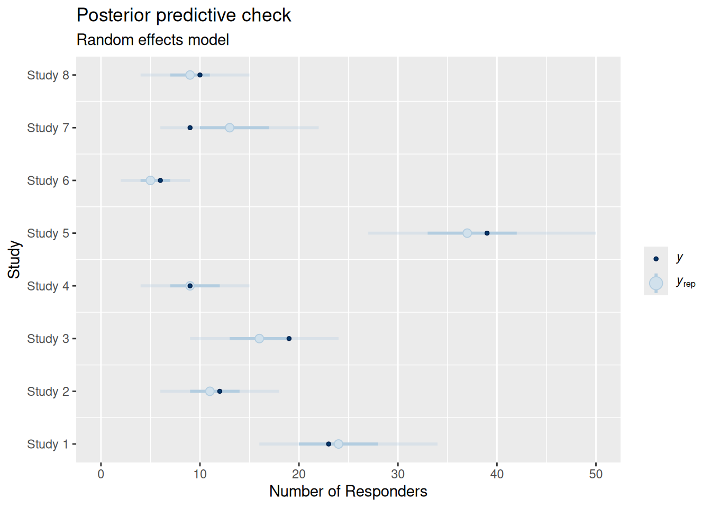
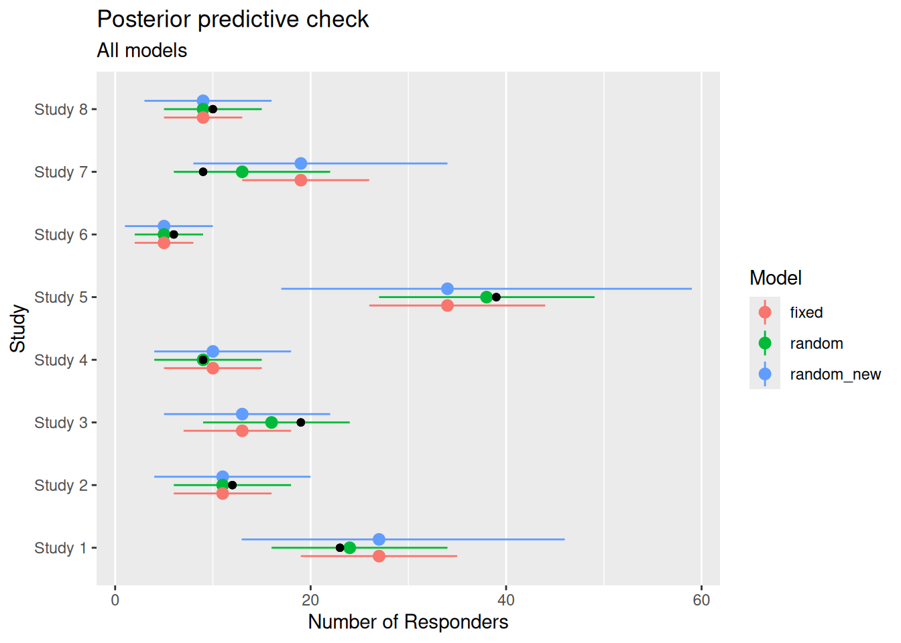

# load historical data on responses by arm from the RBesT package:
arm_data <- RBesT::AS
knitr::kable(arm_data)| study | n | r |
|---|---|---|
| Study 1 | 107 | 23 |
| Study 2 | 44 | 12 |
| Study 3 | 51 | 19 |
| Study 4 | 39 | 9 |
| Study 5 | 139 | 39 |
| Study 6 | 20 | 6 |
| Study 7 | 78 | 9 |
| Study 8 | 35 | 10 |
This section demonstrates the basic steps needed to setup and run an analysis using brms.
Here we will use a simplified version of the case study presented in Chapter 4. Specifically, we will run a random-effects meta-analysis for a binary responder variable which has been measured in multiple trials:
# load historical data on responses by arm from the RBesT package:
arm_data <- RBesT::AS
knitr::kable(arm_data)| study | n | r |
|---|---|---|
| Study 1 | 107 | 23 |
| Study 2 | 44 | 12 |
| Study 3 | 51 | 19 |
| Study 4 | 39 | 9 |
| Study 5 | 139 | 39 |
| Study 6 | 20 | 6 |
| Study 7 | 78 | 9 |
| Study 8 | 35 | 10 |
While in the case study an informative prior for a future study will be derived, we here restrict the analysis to a random-effects meta-analysis with the goal to infer the mean response rate of the control arm as measured in the 8 reported studies.
The statistical model we wish to fit to this data is a random-effects varying intercept model
\[ y_i|\theta_i,n_i \sim \mbox{Binomial}(\theta_i,n_i) \] \[ \mbox{logit}{(\theta_i)}|\beta,\eta_i = \beta + \eta_i \] \[ \eta_i|\tau \sim \mbox{Normal}(0, \tau^2).\]
Thus, each study \(i\) will recieve it’s study-specific response rate \(\theta_i\) as given by the sum of the study-specific random effect \(\eta_i\) and the overall typical responder rate \(\beta\), which are inferred on the logit scale. We choose the priors in a conservative manner aligned with the case study
\[ \beta \sim \mbox{Normal}(0, 2^2)\] \[ \tau \sim \mbox{Normal}^+(0, 1).\]
Ideally your R session will have access to sufficient computational resources, e.g. at least 4 CPU cores and 8000 MB of RAM. The 4 cores are needed to run multiple chains in parallel and the RAM is used during compilation of Stan models.
When working with brms in an applied modeling setting, one often wishes to fit various related models and compare their outputs. With this in mind a recommended preamble for an analysis R script may start with:
library(brms)
# tools to process model outputs
library(posterior)
# useful plotting facilities
library(bayesplot)
# further customization of plots
library(ggplot2)
# common data processing utilities
library(dplyr)
library(tidyr)
# other utilities
library(knitr) # used for the "kable" command
library(here) # useful to specify path's relative to project
# ...
# instruct brms to use cmdstanr as backend and cache all Stan binaries
options(brms.backend="cmdstanr", cmdstanr_write_stan_file_dir=here("_brms-cache"))
# create cache directory if not yet available
dir.create(here("_brms-cache"), FALSE)
# set the R random seed of the session for reproducibility
set.seed(5886935)#| echo: false
#| eval: true
#| include: false
# invisible to the reader additional setup steps, which are optional
## common setup code for each section; enables compilation of each
## section on it's own
knitr::opts_chunk$set(echo = TRUE)
here::i_am("src/setup.R")
#
library(future)
cl <- parallel::makePSOCKcluster(parallelly::availableCores())
parallel::setDefaultCluster(cl)
on.exit(parallel::stopCluster(cl))
#
## avoid that rstan tries to access ressources on the internet
rstan::rstan_options(javascript = FALSE)
# Set defaults for ggplot2 ----
ggplot2::theme_set( ggplot2::theme_bw(base_size=18) +
ggplot2::theme(legend.position = "none"))
scale_colour_discrete <- scale_color_discrete <- function(...) {
# Alternative: ggsci::scale_color_nejm(...)
ggplot2::scale_colour_brewer(..., palette="Dark2")
}
scale_fill_discrete <- function(...) {
# Alternative: ggsci::scale_fill_nejm(...)
ggplot2::scale_fill_brewer(..., palette="Dark2")
}
scale_colour_continuous <- scale_color_continuous <- function(...) {
viridis::scale_colour_viridis_c(..., option="turbo")
}
ggplot2::update_geom_defaults("point", list(size=2))
ggplot2::update_geom_defaults("line", list(size=1.5))
# To allow adding label to points e.g. as geom_text_repel(data=. %>% filter(1:n()==n()))
# update_geom_defaults("text_repel", list(label.size = NA, fill = rgb(0,0,0,0),
# segment.color = "transparent", size=6))
# variables we would like to set differently in a CI/CD environment
chains <- as.numeric(Sys.getenv("BRMS_NUM_CHAINS", 4))
iter <- as.numeric(Sys.getenv("BRMS_NUM_ITER", 2000))
brms_cache_dir <- Sys.getenv("BRMS_CACHE_DIR", here::here("_brms-cache"))
dir.create(brms_cache_dir, FALSE)
# use this flag as argument to the cache option of selected knitr
# blocks which take long => gets now controlled from Quarto
# use_knitr_cache <- Sys.getenv("USE_KNITR_CACHE", "yes") == "yes"
##knitr::opts_chunk$set(cache.path = file.path(brms_cache_dir, "knitr-cache-"))
options(brms.iter = iter
,brms.chains = chains
,brms.backend="cmdstanr"
,cmdstanr_write_stan_file_dir=brms_cache_dir
)
# Set chapter-specific seed
set.seed(sum(as.integer(digest::digest(knitr::current_input(), raw = T))))
# too old brms versions used with too recent cmdstan versions lead to
# a borken caching of model binaries...this is a brute force fix for
# this
source(here::here("src", "brms_utils.R"))
suppressWarnings(patch_brms_recompile())As brms models are translated to Stan model files, which must be compiled as a C++ program before the model is run, it is useful to cache this compilation step such that repeated model evaluation avoids the compilation (speeding up model reruns with different data or model reruns after restarting R). Thus, the brms.backend option cmdstanr is configured as a default. Doing so allows to cache the binary Stan executables in the directory configured with the option cmdstanr_write_stan_file_dir.
In case the model fitted is taking a long time for one chain (more than a minute at least), then it is advisable to turn on parallelization of the multiple chains by default by adding to the preamble:
# use 4 cores for parallel sampling by default - only recommended if
# model takes > 1 minute to run for each chain otherwise the
# parallelization introduces substantial overhead
options(mc.cores = 4)It is discouraged to run chains always in parallel, since the parallelization itself consumes some ressources and is only beneficial if the model runtime is at least at the order of minutes. In case the model runtime becomes excessivley long, then each chain can itself be run with multiple cores as discussed in the section Parallel computation.
With brms statistical models are specified via a model formula and specification of a response family. The family encodes the likelihood and link functions used for the distribution parameters. A distribution parameter is, for example, the response rate of a binomial outcome, the counting rate for a negative binomial endpoint or the overdispersion of a negative binomial.
In general formulaes can be recognized by a ~ sign. Anything on the left-hand side of the ~ describes the response (outcome) while terms on the right-hand side setup the design matrix, random effects or even a non-linear model formula. The left-hand side and the right-hand side can contain special terms which encode additional information and the chosen example makes use of this feature. It’s good practice to store the brms model formula in a separate R variable like:
model_meta_random <- bf(r | trials(n) ~ 1 + (1 | study), family=binomial)The left-hand side of the formula r | trials(n) encodes the main outcome response variable r (number of responders) and it passes along additional information needed for the binomial response here, the number of respondents using trials(n). Using the same notation, the case-study “Meta-analysis to estimate treatment effects” shows how the exposure time can be varyied for count outcomes. The right-hand side of the formula specifies a linear predictor 1. This defines the fixed effect design matrix, which is the intercept only term in this example, but covariates could be included here. In addition, the term (1 | study) defines a random effect with a by study varying intercept. Finally, the family argument specifies the statistical family being used. The link function is by default a logit link for the binomial family. Note that brms supports a large set of families, please refer to
?brmsfamilyfor an overview on the available families in brms. In case your specific family neededed is not available, users even have the option to define their own family. This is a somewhat advanced use of brms, but as brms is designed to accomodate many different families this is in fact not too difficult and a full vignette is available online.
An alternative model in this context could be a fixed effect only model:
model_meta_fixed <- bf(r | trials(n) ~ 1, family=binomial)Note that for some models one may even need to specify multiple model formulas. This can be the case whenever multiple distribution parameters must be specified (a negative binomial needs a mean rate model and a model for the dispersion parameter) or whenever a non-linear model is used, see the case study on dose finding in section @ref(dose-finding).
The specification of priors is not strictly required for generalized linear models in brms. In this case very wide defaults priors are setup for the user. However, these only work well whenever a lot of data is available and it is furthermore a much better practice to be specific about the priors being used in a given analysis.
In order to support the user in specifying priors, the brms package provides the get_prior function. We start with the simple fixed effect model:
kable(get_prior(model_meta_fixed, arm_data))| prior | class | coef | group | resp | dpar | nlpar | lb | ub | source |
|---|---|---|---|---|---|---|---|---|---|
| student_t(3, 0, 2.5) | Intercept | default |
Note that brms requires the model formula and the data to which the model is being fitted to. This is due to fact that only model and data together define all parameters fully. For example, the model formula could contain a categorical variable and then only knowing all categories as defined by the data allows to define the full model with all parameters. For the fixed effect model only a single parameter, the intercept only term is defined. To now define a prior for the intercept, we may use the prior command as:
prior_meta_fixed <- prior(normal(0,2), class="Intercept")The prior for the random effects model is slightly more complicated as it involves a heterogeniety parameter \(\tau\) (standard deviation of the study random effect):
kable(get_prior(model_meta_random, arm_data))| prior | class | coef | group | resp | dpar | nlpar | lb | ub | source |
|---|---|---|---|---|---|---|---|---|---|
| student_t(3, 0, 2.5) | Intercept | default | |||||||
| student_t(3, 0, 2.5) | sd | 0 | default | ||||||
| sd | study | default | |||||||
| sd | Intercept | study | default |
Given that the random effects model is a generalization of the fixed effect model, it is natural to write the prior in a way which expands the fixed effect case as:
prior_meta_random <- prior_meta_fixed +
prior(normal(0,1), class="sd", coef="Intercept", group="study")The logic to defined priors on specifc parameters is to use the different parameter identifiers as provided by the get_prior command. In this context class, coef and group is used for parameter class, parameter coefficient and grouping, respectivley. The identifiers resp, dlpar and nlpar are used in the context of multiple responses, multiple distribution parameters oe non-linear parameters, respectivley. It is preferable to be specific as above in the definition of priors while it is admissable to be less specific like:
prior_meta_random <- prior_meta_fixed +
prior(normal(0,1), class="sd")This statement assign to all random effect standard deviations of the model the same prior, which can be convenient in some situations.
Having defined the model formula, the family and the priors we can now fit the models with the brm command.
fit_meta_fixed <- brm(model_meta_fixed, data=arm_data, prior=prior_meta_fixed,
## setup Stan sampler to be more conservative, but more robust
control=list(adapt_delta=0.95),
## these options silence Stan
refresh=0, silent=TRUE,
seed=4658758)Start samplingRunning MCMC with 4 sequential chains...
Chain 1 finished in 0.0 seconds.
Chain 2 finished in 0.0 seconds.
Chain 3 finished in 0.0 seconds.
Chain 4 finished in 0.0 seconds.
All 4 chains finished successfully.
Mean chain execution time: 0.0 seconds.
Total execution time: 0.6 seconds.fit_meta_random <- brm(model_meta_random, data=arm_data, prior=prior_meta_random,
control=list(adapt_delta=0.95),
refresh=0, silent=TRUE,
seed=5868467)Start samplingRunning MCMC with 4 sequential chains...
Chain 1 finished in 0.1 seconds.
Chain 2 finished in 0.1 seconds.
Chain 3 finished in 0.1 seconds.
Chain 4 finished in 0.1 seconds.
All 4 chains finished successfully.
Mean chain execution time: 0.1 seconds.
Total execution time: 0.9 seconds.When calling brm a Stan model file will be created, compiled and run with the data provided. The arguments used are:
formula is the first argument here. It specifies the model. Since we have in this case provided family as part of the formula, we do not need to specify it as argument to brm, which is also possible to do.data the data used to fit.prior definition of the priors for all model parameterscontrol defines additional control arguments to the Stan sampler. A higher than standard adapt_delta (defaults to 0.8) causes the sampler to run less aggressively which makes the sampler more robust, but somewhat slower.refresh & silent are used here to suppress Stan sampling output.seed sets the seed use for the fit.In the course of an exploratory analysis one often wishes to modify a given model slightly to study, for example, the sensitivity to different assumptions. For this purpose the update mechanism is a convenient way to simply change certain arguments specified previously. To change the prior on the study level random effect parameter one may use:
prior_meta_random_alt <- prior_meta_fixed +
prior(normal(0,0.5), class="sd", coef="Intercept", group="study")
fit_meta_random_alt <- update(fit_meta_random, prior=prior_meta_random_alt,
control=list(adapt_delta=0.95),
refresh=0, silent=TRUE,
seed=6845736)The desired updates require recompiling the modelStart samplingRunning MCMC with 4 sequential chains...
Chain 1 finished in 0.1 seconds.
Chain 2 finished in 0.1 seconds.
Chain 3 finished in 0.1 seconds.
Chain 4 finished in 0.1 seconds.
All 4 chains finished successfully.
Mean chain execution time: 0.1 seconds.
Total execution time: 0.9 seconds.As changing the prior results in this case in a need to recompile the model, the benefits of using update are not large in this case. However, whenever a model recompilation is not needed, then using update significantly speeds up the workflow as the compilation step is avoided, e.g. when looking at data subsets:
prior_meta_random_alt <- prior_meta_fixed +
prior(normal(0,0.5), class="sd", coef="Intercept", group="study")
fit_meta_random_alt2 <- update(fit_meta_random, newdata=slice_head(arm_data, n=4),
control=list(adapt_delta=0.95),
refresh=0, silent=TRUE,
seed=5868467)Start samplingRunning MCMC with 4 sequential chains...
Chain 1 finished in 0.1 seconds.
Chain 2 finished in 0.1 seconds.
Chain 3 finished in 0.1 seconds.
Chain 4 finished in 0.1 seconds.
All 4 chains finished successfully.
Mean chain execution time: 0.1 seconds.
Total execution time: 0.6 seconds.Now the fit starts instantly leading to a faster and more convenient modeling workflow.
When working with brms you will encounter warnings now and then which originate from Stan itself. While brms attempts to add explanations to these warnings as to what they mean and how to avoid them, the Stan community has provided an online help-page on possible warnings occuring during a Stan fit.
Once models are fit, we obtain - by default - a posterior sample of the model. Given that priors are used in such an analysis it can be convenient to first consider the priors which were used to create a given fitting object like:
kable(prior_summary(fit_meta_random))| prior | class | coef | group | resp | dpar | nlpar | lb | ub | source |
|---|---|---|---|---|---|---|---|---|---|
| normal(0, 2) | Intercept | user | |||||||
| student_t(3, 0, 2.5) | sd | 0 | default | ||||||
| sd | study | default | |||||||
| normal(0, 1) | sd | Intercept | study | user |
An even more explicit way to analyze the prior of a model is to sample it directly:
prior_meta_random <- update(fit_meta_random, sample_prior="only",
control=list(adapt_delta=0.95),
refresh=0, silent=TRUE,
seed=5868467)Start samplingRunning MCMC with 4 sequential chains...
Chain 1 finished in 0.0 seconds.
Chain 2 finished in 0.0 seconds.
Chain 3 finished in 0.0 seconds.
Chain 4 finished in 0.1 seconds.
All 4 chains finished successfully.
Mean chain execution time: 0.0 seconds.
Total execution time: 0.5 seconds.This will sample the model in the usual way, but simply leave out the terms implied by the data likelihood. The resulting model sample can be analyzed in exactly the same way as the model posterior itself. This technique is called prior (predictive) checks.
Returning to the model posterior, the obvious first thing to do is to simply print the results:
print(fit_meta_random) Family: binomial
Links: mu = logit
Formula: r | trials(n) ~ 1 + (1 | study)
Data: arm_data (Number of observations: 8)
Draws: 4 chains, each with iter = 2000; warmup = 1000; thin = 1;
total post-warmup draws = 4000
Multilevel Hyperparameters:
~study (Number of levels: 8)
Estimate Est.Error l-95% CI u-95% CI Rhat Bulk_ESS Tail_ESS
sd(Intercept) 0.39 0.22 0.04 0.90 1.00 1052 1256
Regression Coefficients:
Estimate Est.Error l-95% CI u-95% CI Rhat Bulk_ESS Tail_ESS
Intercept -1.11 0.20 -1.50 -0.70 1.00 1127 1227
Draws were sampled using sample(hmc). For each parameter, Bulk_ESS
and Tail_ESS are effective sample size measures, and Rhat is the potential
scale reduction factor on split chains (at convergence, Rhat = 1).We see that we fitted the default 4 chains and ran each chain for 1000 warmup iterations and 2000 total iterations such that we are left with 4k iterations overall. brms reports by default as estimate the mean of the posterior with it’s standard error and the 95% credible interval. The Rhat column is a convergence diagnostic which should be close to 1.0. Values above 1.1 indicate non-convergence of the Markov Chain for the particular parameter. The additional two columns on bulk and tail ESS indicate statistical information on central moments and tail properties of the target quantitiy. The ESS is the effective sample size of the MC estimator, which assumes that the estimation error of the mean scales with \(1/\sqrt{ESS}\). An ESS of ~200 is usually sufficient for a precise estimate of the mean. It is important to note that the Stan HMC sampler often requires fewer iterations (for which more time is spent) as compared to BUGS or JAGS in order to reach a comparable ESS. For more details on the ESS, please refer to the Stan reference manual on ESS.
brms supports the common R functions to extract model results:
fitted to get the posterior estimates of expected values of for each data row (no sampling uncertainty)predict to get the posterior predictive estimates of the response for each data row (includes sampling uncertainty)coef/ranef to get the random effect estimates including/excluding the linear predictor partbrmsOf note is the argument summary, which is used in a number of these functions. The default is set to TRUE such that the output are summaries of the posterior sample in the form of means, credible intervals, etc. When setting the argument summary=FALSE then the posterior sample is returned in the format of a matrix. Each row of the matrix is one iteration while the columns of the matrix run with the rows of the input data-set.
For example, we can compare the estimated mean response fo the two different models as:
fitted(fit_meta_random) Estimate Est.Error Q2.5 Q97.5
[1,] 24.422596 3.688009 17.310181 31.705575
[2,] 11.498271 2.131884 7.613735 16.218670
[3,] 16.123568 3.074037 11.162169 22.887761
[4,] 9.410968 1.905810 5.770311 13.470430
[5,] 37.780937 4.620416 29.236132 47.479274
[6,] 5.382889 1.218695 3.209769 8.154431
[7,] 13.513251 3.589218 7.002771 20.590007
[8,] 9.320552 1.880953 6.039857 13.473071fitted(fit_meta_fixed) Estimate Est.Error Q2.5 Q97.5
[1,] 26.533687 2.0380505 22.574910 30.640824
[2,] 10.911049 0.8380768 9.283141 12.599965
[3,] 12.646898 0.9714072 10.760004 14.604505
[4,] 9.671157 0.7428408 8.228238 11.168151
[5,] 34.468995 2.6475609 29.326285 39.804435
[6,] 4.959568 0.3809440 4.219609 5.727257
[7,] 19.342314 1.4856817 16.456477 22.336302
[8,] 8.679243 0.6666520 7.384316 10.022699As expected, the standard errors for the fixed effect analysis are considerably smaller.
How to analyze a given model obviously depends very much on details of the problem at hand. Often we wish to evaluate how well the model describes the problem data used to fit the model. Thus, the ability of the model to describe certain summaries of the data set accuratley is one way to critize the model. Such an approach requires to compare predictions of the data by the model \(y_{rep}\) to the actual data \(y\). This procedure is referred to as posterior predictive checks. A key feautre of the approach is to account for sampling uncertainty implied by the endpoint and sample size.
For a meta-analysis we may wish to check how well the summary statistics of the historical data is predicted by the model. The brms package integrates with the bayesplot package for the purpose of posterior predictive checks, which could look in this case like:
# create intervals plot and label plot accordingly
pp_check(fit_meta_random, type="intervals", ndraws=NULL) +
scale_x_continuous("Study", breaks=1:nrow(arm_data), labels=arm_data$study) +
ylab("Number of Responders") +
coord_flip(ylim=c(0, 50)) +
theme(legend.position="right",
## suppress vertical grid lines for better readability of intervals
panel.grid.major.y = element_blank()) +
ggtitle("Posterior predictive check", "Random effects model")
pp_check(fit_meta_fixed, type="intervals", ndraws=NULL) +
scale_x_continuous("Study", breaks=1:nrow(arm_data), labels=arm_data$study) +
ylab("Number of Responders") +
coord_flip(ylim=c(0, 50)) +
theme(legend.position="right",
## suppress vertical grid lines for better readability of intervals
panel.grid.major.y = element_blank()) +
ggtitle("Posterior predictive check", "Fixed effects model")Shown is a central 50% credible interval with a thick line, a thinner line shows the 90% credible interval, the open dot marks the median prediction and the filled dark dot marks the observed value of the data. We see is that in particular study 7 is predicted unsatisfactory by the fixed effect model. An additional interesting predictice check in this case is in view of a possibile use as historical control information part of a new study. While the above predictive check of the random effects was conditional on the fitted data, we can instead use the random effects model and predict each study as if it were a new study:
# create intervals plot and label plot accordingly
pp_arm_data_new <- posterior_predict(fit_meta_random,
newdata=mutate(arm_data, study=paste0("new_", study)),
allow_new_levels=TRUE,
sample_new_levels="gaussian")
# use bayesplot::ppc_intervals directly here
ppc_intervals(y=arm_data$r, yrep=pp_arm_data_new) +
scale_x_continuous("Study", breaks=1:nrow(arm_data), labels=arm_data$study) +
ylab("Number of Responders") +
coord_flip(ylim=c(0, 50)) +
theme(legend.position="right",
## suppress vertical grid lines for better readability of intervals
panel.grid.major.y = element_blank()) +
ggtitle("Posterior predictive check - new studies", "Random effects model")
Now the credible intervals are wider as these contain additional variability. As for study 7 the random effect is not anymore conditioned on the data of the study, we see again that the model struggles to account for the study nicely. However, with the additional heterogeniety the result of study 7 is at least plausible given that it is contained in the 90% credible interval.
In the above discussion we have ensured the comparability of the plots via matching the axis limits. A more straightforward is a side by side comparison of the models, which can be achieved like:
# use bayesplot::ppc_intervals_data directly here
model_cmp <- bind_rows(random_new=ppc_intervals_data(y=arm_data$r, yrep=pp_arm_data_new),
random=ppc_intervals_data(y=arm_data$r, yrep=posterior_predict(fit_meta_random)),
fixed=ppc_intervals_data(y=arm_data$r, yrep=posterior_predict(fit_meta_fixed)),
.id="Model") %>%
# add in labels into the data-set
left_join(select(mutate(arm_data, x=1:8), x, study), by="x")
ggplot(model_cmp, aes(study, m, colour=Model)) +
geom_pointrange(aes(ymin=ll, ymax=hh), position=position_dodge(width=0.4)) +
geom_point(aes(y=y_obs), colour="black") +
ylab("Number of Responders") +
xlab("Study") +
coord_flip() +
theme(legend.position="right",
# suppress vertical grid lines for better readability of intervals
panel.grid.major.y = element_blank()) +
ggtitle("Posterior predictive check", "All models")
A more formal way to compare these models is to consider their ability to predict new data. In absence of new data we may instead turn to scores which evaluate the ability of the model to predict data which has been left out when fitting the model. The leave-one-out scores can be calculated using fast approximations (see loo command) whenever the data-set is large enough. We refer the reader to the case study on Dose finding where these model comparisons are discussed in greater detail.